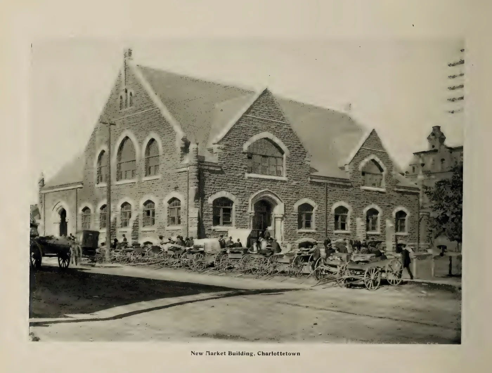
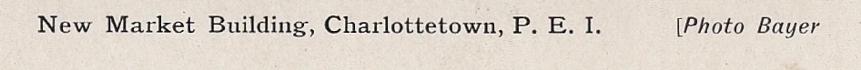
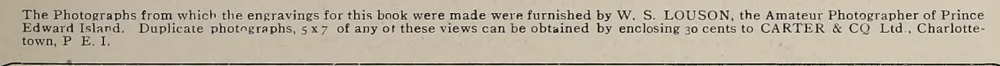

The DNA of P.E.I. Postcards, Part Two: One Market, Several Names
The carriages have not moved. Neither have the people beside them. Yet this view of Charlottetown’s Market Building carries us through several businesses, two photographic names, and a souvenir book that offered readers a photograph of their own.
At first glance, these might be four ordinary views of a much-photographed building. One postcard leaves a generous pale border around its picture. Another gives the stonework a warm colour and puts its title in the sky. A third brings the scene almost to the edges of the card. The fourth belongs to a book.
Look at the vehicles along the wall, however, and the relationship becomes much closer. The same wheels overlap. The same figures stand between the carriages and the building. The strong shadow crosses the foreground in the same way. These are reproductions of the same photographic image, with different cropping, colour and printed presentation.
In Part One, Pugh’s 524 series, the trail ran between photographic postcards and colour reproductions. Here it runs through three postcard editions and Carter & Co.’s souvenir album. The question is what the names attached to those objects actually tell us.
Four versions of one photograph
Read these as a comparison, not a publication timeline. The arrangement does not establish which edition came first. The three postcard images open their full catalogue records, including the backs; the album image opens the digitized source page.



How we know it is the same image
A building can remain unchanged between visits by different photographers. The arrangement outside it is more discriminating. Start with the horse and vehicle at the far left. Move along the line of wheels, past the pale rectangular load near the middle, to the carriage and standing figure toward the right. Their positions agree across the versions, as do the camera’s view of the masonry and the foreground shadow.
That combination establishes an image match. The differences are in its reproduction: how much of the scene is retained, how dark it appears, where lettering is placed, and whether colour has been added. The match does not identify the particular print or negative used by each publisher. A printer could have worked from a photographic print, a copy of a print, or another reproduction.
There is also a useful distinction from the preceding instalment. Card 4169 is a printed reproduction, not an RPPC merely because its picture is monochrome and its caption credits Bayer. This comparison follows the underlying photograph through printed objects; it does not supply the original camera negative or a photographic postcard of this exact exposure.
What the surviving objects establish
Confirmed: one photographic image appears in all four versions. The moving subjects and incidental details agree, not simply the identity of the building.
Confirmed: 4169 explicitly credits Bayer. “Photo Bayer” is printed beside its caption. It is positive attribution evidence attached to this particular photograph.
Confirmed: Haszard and Taylor issued the image under their names. Their imprints are on the postcard backs. Those names identify the businesses offering these editions; the imprints do not themselves name the photographer.
Confirmed: the Carter album credits Louson as the supplier of its photographs. Its title page also names the James Bayne Co. of Grand Rapids, Michigan, as “Photographers, Engravers and Printers.” These are statements printed in the album, not a reconstructed chain of transactions.
Two credits that deserve to stay visible


The album’s wording is quite specific: the photographs from which its engravings were made were “furnished by W. S. Louson.” It describes him as the amateur photographer of Prince Edward Island. That is an important connection, but furnishing an album’s selection and making every exposure in it are not necessarily the same thing.
Conversely, the Bayer credit should not be explained away as a routine studio backstamp. It appears with the Market Building caption on the front. The careful description is therefore: a photograph explicitly credited to Bayer on one postcard also appears in an album whose photographs were collectively credited as supplied by Louson. Both pieces of evidence survive. Neither should be silently replaced with the other.
There is a third distinction to preserve. The Carter name belongs to the souvenir book in this comparison. Card 4169 has no identified publisher imprint; the shared image does not make it a Carter postcard.
A photograph available in more than one form
The bottom of the album’s title page offers something especially revealing. Readers could obtain duplicate photographs, measuring five by seven inches, by sending thirty cents to Carter & Co. in Charlottetown. The picture was therefore presented as more than an illustration in a bound souvenir: the publisher advertised a separate photographic print of any view in the book.
That offer helps explain why tracing an image only through postcards can miss part of its life. A purchaser could encounter the Market Building in a book, select it as a larger photograph, or send a postcard edition. Those objects served different purposes, even while preserving the same carriages and the same patch of shadow. The advertisement documents the offer; it does not tell us who made the duplicate prints or how many were ordered.
Haszard 3012 and Taylor 0135 add another clue on their reverses. Both use a closely matching red “Private Post Card” layout, with the retailer’s name changed, and both carry a “Printed in Belgium” statement. That makes a common printing or supply source a reasonable line of investigation. It does not identify the Belgian firm, and the back design cannot establish who took the photograph.


Theories: how might the picture have travelled?
One possibility is that Louson supplied an album selection which included a Bayer photograph. This would accommodate the individual Bayer credit and the collective Louson supply credit. It would still leave the route by which Louson obtained the image, and any permission or payment involved, undocumented.
Another possibility involves studio printing and copying. Chris Ellis’s 2024 study of Louson states that Gauvin, Gentzel & Co. printed his photographs and made exhibition enlargements and copies. Bayer managed and later owned the Charlottetown studio under that name. The published account therefore gives us a real reason to investigate a working relationship. It does not identify the maker of this Market Building exposure, explain the “Photo Bayer” credit, or document its transfer to Haszard, Taylor or Carter. Ellis, “William Steele Louson: A Philatelic Perspective,” page 174.
The postcard publishers may also have received the image through an intermediary. Shared imagery and related backs are compatible with a printer or distributor supplying several retailers. They do not prove a direct sale from a photographer to each shop. At present there is no invoice, agreement or correspondence in the evidence assembled here that supplies that missing chain.
These possibilities should remain separate. The confirmed image match does not depend on choosing one of them. An independently documented negative or early print could strengthen the photographic attribution; a contemporary letter, order or invoice could establish a business relationship. Those would answer different questions.
A view, not yet a dated sequence
The temptation is to lay the four pictures out as a neat progression: photographer, first postcard, colour edition, souvenir book. The evidence does not yet provide that order. A postmark dates the use of a particular card, not the exposure or the first publication of its image. An unused card cannot be placed earlier simply because it looks older.
The album itself has no printed publication date on the title page examined here. Its dating has been treated differently in cataloguing and historical research, so it is not used here to establish priority between editions. Likewise, the word “New” in a caption is not a precise date. What we can demonstrate is the image’s presence in these different objects.
Nor should this exposure be folded into every other view of Market Square. The photograph with the Wonderland sign, paired with Pugh 524-8 in Part One, is a different image. It has its own story of an early moving-picture venue, explored in Five Cents at Wonderland. Recognizing the building begins the search; matching the photograph is what makes the connection secure.
The people remain while the names change
Seen together, the four versions give this familiar Charlottetown landmark another kind of history. They preserve the work of a photographer, the choices of printers and publishers, and the circulation of a view beyond a single business. Colour, borders and captions change. A photographic credit appears in one place and a supply credit in another.
The people beside the carriages have left us no names in these captions. Yet their positions help reconnect editions that might otherwise sit in separate publisher lists. They are small, incidental details in a grand architectural view—and the best evidence that these publishers were sharing the same moment.
Other copies and sources
The comparison shows one representative of each postcard edition. Other copies of the matched image in these publisher groups are linked here:
- Bayer-credited postcard: 4169.
- Haszard & Moore: 3012 and 4423.
- Taylor’s Bookstore: 0135, 1769, 2160, 2237, 2503 and 3612.
The principal sources are the postcard fronts and backs, and the digitized Carter album, especially its title page and Market Building plate. The album is Charlottetown: The Beautiful City of Prince Edward Island; it is not the separate Carter portfolio of detachable postcards.
For the studio-printing connection, see Chris Ellis’s 2024 article linked above. Harry Holman’s Our Quiet But Engaging Scenery, The Island Magazine 80 (2016), places Carter’s two Louson-supplied souvenir volumes in 1904; Internet Archive catalogues this digitized volume as 1903. Neither date resolves the order of the four editions shown here. Holman’s study.
Image comparisons reviewed November 2026. The printed credits are retained as found; the theories remain open to further evidence.